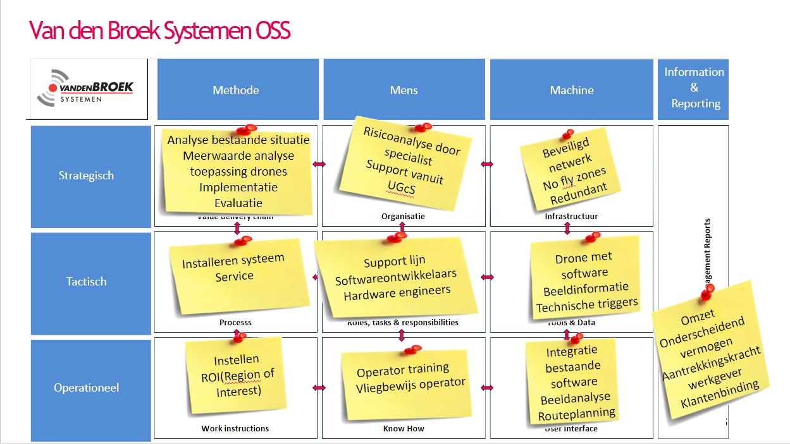

Design Thinking is een iteratief proces dat gebruikt wordt om complexe problemen (ook wel ‘wicked problems’ genoemd) op te lossen. Daarbij staat de gebruiker en zijn behoeftes centraal; Design Thinking draait om het begrijpen van de mensen voor wie een product of dienst ontwikkeld wordt.
Het klinkt misschien logisch om de behoefte van de klant centraal te stellen, maar dat is het in de praktijk vaak niet. Mensen zijn erg geneigd om in patronen en aannames te denken. Het is ontzettend lastig om die aannames naast ons neer te leggen en vanuit de behoefte van een gebruiker tot innovatieve oplossingen te komen. Design Thinking wordt vaak aangeduid als ‘outside the box thinking’. Ontwerpers proberen nieuwe manieren van denken te ontwikkelen en zich los te maken van de dominante of meer gebruikelijke probleemoplossingsmethoden.
Design Thinking is zowel een manier van denken en werken, als een verzameling van praktische methodes die je stimuleren nieuwe alternatieven te onderzoeken om zo tot betere oplossingen te komen.
Aan de hand van de workshop over design thinking heb ik zelf nog even onderzoek gedaan om het in een document uit te kunnen werken. Design thinking kan verdeeld worden aan de hand van 5 fases:
In deze fase ontwikkel je empathie voor alle betrokkenen bij een complex probleem, het doel van deze fase is om aannames en vooroordelen achter je te laten. Aan de hand van deze empathie kan de basis gelegd worden voor een oplossing.
In deze fase ga je aan de slag met de vergaarde informatie uit de empathie fase. Alle informatie wordt geanalyseerd en in deze fase samengevoegd, aan de hand van deze analyse wordt het kernprobleem vastgesteld.
Het hoofddoel van deze fase is om zoveel mogelijk ideeën te bedenken met betrekking tot het oplossen van het kernprobleem. Nu je alle betrokken goed begrijpt(empathiefase) en het kernprobleem bekend is (definitiefase), ga je proberen om te brainstormen naar oplossingen voor dit kernprobleem. Dit kun je doen aan de hand van verschillende methodieken.
In deze fase ga je een prototype realiseren van de oplossing die in de vorige fase bedacht is, het doel hiervan is om op experimentele wijze de best mogelijke oplossing te ontdekken. Het resultaat van deze fase is om goed inzicht te krijgen in de beperkingen van de oplossing en om te ontdekken hoe de betrokken reageren bij een bepaalde oplossing.
De laatste fase van de Design Thinking is het testen van het eindproduct. Ondanks dat dit de laatste fase is, is het vaak niet het einde van het proces omdat design thinking een iteratief proces is. Door dit iteratieve proces wordt de oplossing steeds beter doordat het op zichzelf voortborduurt.
De workshop van Elk draaide vooral over lean werken. Elk is een vooruitstrevend bouwbedrijf, wie de lean methoden geheel naar eigen hand heeft weten te zetten. Samenwerken staat hierin centraal en dat is ook een van de succesfactoren van deze formule. Hierdoor claimt het bedrijf een stuk efficienter te werk te gaan en dat komt ten goede van projecten, klanten en doorlooptijden.
De workshop begon met een uitleg over wat lean werken nu eigenijk inhoudt. Dit werd al snel gekoppeld aan de huidige werkvormen binnen elk, wat meteen een aardig beeld schepte over de werkwijze en werksfeer binnen het bedrijf. Aan de hand van duidelijke schema’s en illustraties werd er uitgelegd dat er door vijf stappen te volgen, deze nieuwe manier van werken mogelijk gemaakt kan worden binnen een bedrijf. Hierin werd Elk natuurlijk steeds als voorbeeld genomen.
Na de introductie en uitleg over de werkwijze werd verder ingegaan op de invulling van deze methode in de praktijk. Daadwerkelijke functies en personen werden gekoppeld aan de algemene schema’s uit de introductie, en al snel werd duidelijk hoe Elk in de praktijk te werk ging.
Met deze kennis op zak kregen we als groep ook de opdracht om SCRUM op deze manier toe te gaan passen. Er werden groepen gemaakt en de rollen van Scrum master, Product owner en Team (uitleg onderstaand) werden verdeeld. Aan de hand van verschillende opdrachten konden we kennis maken met Elk’s manier van Scrummen en SCRUM in het algemeen.
Scrum master: Zorgen dat het werk productief wordt verricht
Product owner: kiezen wat wel of niet wordt gedaan
Team: Zorgen dat het werk kwalitatief wordt verrich
Ook zijn we met de gehele groep naar het Kook College geweest in Wijchen. Op het eerste gezicht misschien een irrelevant uitstapje, maar al snel bleek dat koken slechts een middel was om onze projectmanagende en samenwerkende kwaliteiten op scherp te zetten.
De opdracht was om als groep een 3-gangenmenu op tafel te zetten. Dit moest binnen een bepaalde tijd gebeuren, met een beperkt aantal ingredienten. Daarnaast moest er rekening gehouden worden met bepaalde allergieen en dieeten. Dit zorgde voor de nodige uitdagingen.
De groep werd opgedeeld in drie ploegen: voorgerecht, hoofdgerecht en nagerecht. Daarnaast werd er een leider verkozen, wie met de ploegen in gesprek ging over dieetwensen en allergieen binnen de groep, maar ook over timing en taakverdeling van de servering en opstelling van servies. Na een periode van overleg leverde elk team een gerecht op wat ze wilde gaan maken. Elke groep kon nu echt van start.
Tijdens het overleg werd al snel duidelijk dat er tijdens het koken in een groep een duidelijk plan moest zijn. In dit plan werden bijvoorbeeld ingredienten benoemd en taken verdeeld. Toen iedereen precies wist wat hij of zij moest gaan doen verliep het traject al iets soepeler. Iedereen was druk bezig met zijn of haar eigen taak in een proces waar ook andere mensen mee bezig waren. Hierdoor moest je wel samenwerken en leerde je je medestudenten meteen beter kennen.
Wanneer de serveertijd in zicht kwam zorgde de leider ervoor dat er op de juiste plekken mensen bijsprongen die op dat moment niet veel te doen hadden. Zo hielp iedereen elkaar en werden de serveertijden ook telkens gehaald. Daarnaast bleken de gerechten ook nog eens erg lekker!
Al met al een erg geslaagde excursie met een onverwacht nuttige invulling.
In workshop 2 was gastspreker Geert Rensen te gast, hij kwam een aantal business termen voorleggen die voor mij nog volledig onbekend waren. Dit was voor mij de basis van Smart Business. Deze methodes werden toegelicht aan de hand van een casus, waarin wij een praktijkvoorbeeld uit voorgelegd krijgen en deze moeten uitwerken aan de hand van de methodieken van Geert. Zo is er eerst gebrainstormd en een Business Model Canvas opgesteld aan de hand van de huidige situatie bij AXA: (mocht het niet leesbaar zijn --> in het document is het uitgewerkt) Daarna kregen we de opdracht om een veranderplan op te stellen aan de hand van de casus van AXA, en vanwege de minor moesten we proberen om Smart oplossingen te bedenken om de relatie tussen de business en de Smart Industry te kunnen leggen. Ons veranderplan is uitgelegd in onderstaand document:
De doel van deze workshop is om kennis te maken met het TOM-model (Target Operating Model) zodanig dat dit model toegepast kan worden op een eigen project/opdracht. Hiervoor dien je in staat te zijn om benodigde aanpassingen, bottlenecks, kansen en bedreigen vast te stellen bij veranderingen in de organisatie. Aan de hand van deze analyse dien je innovaties afkomstig uit het TOM-model door te kunnen voeren binnen de desbetreffende organisatie. Het TOM-model is stap voor stap uitgelegd en vervolgens aan de hand van wat praktijkvoorbeelden toegelicht.
Onderstaand het TOM-model hoe deze toegepast is bij ons project bij Van den Broek:

Toepassen TOM-model
Voor ons project hebben wij onderzoek gedaan naar de toepasbaarheid van autonome drones bij het beveiligen van bedrijfsterreinen. Hiervoor zijn wij gaan onderzoeken wat er allemaal mogelijk was binnen de wetgeving, al snel kwamen we tot de conclusie dat er wel het een en ander mogelijk was. Hierdoor hebben we gelijk het TOM-model toegepast om te analyseren wat de implementatie van autonome drones voor een invloed gaat hebben op de organisatie van Van den Broek. Verdere toelichting over het TOM-model voor Van den Broek is te vinden bij Smart Project.
Analyseren BMC Van den Broek
Het Business Model Canvas kwam al snel ter sprake, en raakte hierover in gesprek met onze begeleider van Van den Broek. Zij maakten veelvuldig gebruik van het BMC en dan vooral als meerjarig veranderplan, eens in de zoveel tijd werd er een BMC samengesteld om te kijken hoe ze zichzelf als bedrijf over een aantal jaren zagen. In onderstaande BMC is in 2018 opgesteld en is weergegeven waar ze in 2023, 5 jaar later, ongeveer willen zijn. Natuurlijk wijkt dit deels af van de werkelijkheid omdat er natuurlijk ook andere dingen nog op het pad komen, maar het is wel een rode draad in je onderneming om met z’n allen aan te werken. Ik vind dit persoonlijk erg handig omdat het hierdoor binnen de onderneming voor iedereen duidelijk is waar naartoe gewerkt wordt en zo alle neuzen in de juiste richting te krijgen om deze doelen daadwerkelijk te realiseren.
Voor de casus van AXA diende wij een voorstel te doen voor een veranderplan voor de verzekeraar AXA aan de hand van Smart oplossingen. Zo was er binnen de groepjes veel diversiteit over de gekozen oplossingen en zag je alle groepjes een eigen kant op gaan. Zo koos bijvoorbeeld een groepje ervoor om een app te gebruiken om de klanten visueel te kunnen ondersteunen. De kennis die opgedaan is bij Smart Technology kan hierbij van pas komen. Hierin is eigenlijk perfect te zien dat de link tussen techniek en business veel dichter bij elkaar ligt dan ik aan het begin van deze minor verwacht had. Meer informatie hierover is te zien bij: ‘Workshop 2: Casus AXA’.
Om te onderzoeken hoe Smart Connection toegepast kan worden in een bepaalde business casus, heb ik de AXA casus erbij gepakt en hiervan een schema gemaakt van hoe je zo'n bedachte oplossing nou kunt realiseren en me dan hierbij vooral gericht op de connection van deze oplossing. Zo is hier gegaan voor de oplossing van een kastje in de auto die allerlei rijgegevens meet en opslaat in een database op de cloud. De gegevens kunnen vervolgens via een website of applicatie ingezien worden door AXA, de agent en de klant zelf.
Voor uitleg rondom bovenstaand schema, wijs ik u graag door naar Smart Connection.
In de basis is een bedrijfsproces een zich herhalende keten van activiteiten. Deze keten is gericht op de klant en afgestemd op het bedrijf. Bedrijfsprocessen zijn eigenlijk het fundament van een organisatie.
Binnen een bedrijf zijn al deze bedrijfsprocessen met elkaar verbonden. Zo is een klantorder verwerken een voorbeeld van een bedrijfsproces, maar ook de voorraad bijwerken en inkopen doen. Deze bedrijfsprocessen zijn onderling ook weer met elkaar verbonden. Als er bijvoorbeeld iets mis gaat in het bedrijfsproces van de voorraad en de inkopen, zal dit directe gevolgen hebben voor het bedrijfsproces van het verwerken van een klantorder. Zo zie je dat als er ergens in een bedrijfsproces iets mis gaat, dit direct gevolgen heeft voor de rest van de organisatie. Om deze reden is het dus belangrijk om een bedrijfsproces zo efficiënt mogelijk in te richten. Zo heeft het mislopen van een van de bedrijfsprocessen directe gevolgen voor de hele bedrijfsketen.
Zo zie je in bovenstaande afbeelding hoe een bedrijfsproces opgezet is, hierin zie je dat een aantal taken gecombineerd samen een bedrijfsproces vormen. Zo bestaat een organisatie op dezelfde manier weer uit een aantal bedrijfsprocessen. Dat is hoe een bedrijfsketen is opgebouwd. Het falen van een van de bedrijfsprocessen heeft een invloed op de hele bedrijfsketen en moet dus voorkomen worden. Om deze reden moeten deze processen zo slim en efficiënt mogelijk ingericht worden.
Vandaag de dag wordt de maatschappij steeds meer digitaal en verloopt steeds meer op een “smart”-manier. Om een bedrijfsproces te kunnen verbeteren en deze toekomstproef te maken, is het belangrijk om bedrijfsprocessen te digitaliseren en te automatiseren. Hiervoor is het belangrijk om de bedrijfsprocessen te analyseren en alles duidelijk in kaart te brengen, zodat je weet wat er goed gaat en wat er ook beter kan natuurlijk. Als je alle processen hebt nagelopen, zie je waarschijnlijk dat veel van deze processen gedigitaliseerd én geautomatiseerd kunnen worden.
Om als bedrijf de volgende stap te kunnen zetten in het efficiënter maken van bedrijfsprocessen, is het handig om bedrijfsprocessen te automatiseren. Dit wordt ook wel proces-automatisering genoemd. Om proces-automatisering te kunnen definiëren kunnen we definities van bedrijfsproces en automatisering met elkaar combineren.
“Automatisering is het vervangen van menselijke arbeid door machines of computers en computerprogramma’s.”
“Een geordende bundeling van activiteiten in relatie tot de productie van goederen en/of diensten.”
Met behulp van deze twee definities kan er een definitie voor proces-automatisering opgesteld worden. Het combineren van deze 2 definities leidt tot de volgende definitie:
“Proces-automatisering is het vervangen van menselijke arbeid door machines of computers en computerprogramma’s, in een geordende bundeling van activiteiten in relatie tot de productie van goederen en/of diensten.”
Oftewel, met proces-automatisering neem je medewerkers terugkerende taken uit handen.
Om bedrijfsprocessen te automatiseren en te digitaliseren is het belangrijk om te achterhalen hoe het gebruik van IOT ingezet kan worden om het proces slimmer te maken. Hiervoor zal ik de tegengekomen bedrijven analyseren en hier een advies over uitbrengen om in de toekomst hun bedrijfsproces efficiënter te kunnen maken.
Van den Broek Systemen
Huidige situatie:
Binnen Van den Broek is het niet 100% duidelijk hoe een project aangepakt wordt. Bijvoorbeeld, wordt er altijd scrum gewerkt, of volgens het V-model.
Verbetering:
Regel software waarin de progressie en de voortgang van een project bijgehouden kan worden. Dit aan de hand van een planning.
Voordeel:
Door dit toe te passen kunnen alle betrokkene bij een project exact zien hoe de deelprojecten ervoor staan en wat er nog moet gebeuren. Dit is een voordeel omdat hierdoor iedereen op één lijn zit in een project en niet langs elkaar op werkt.
AXA verzekeringen
Huidige situatie:
De premies worden bepaald aan de hand van schadevrije jaren.
Verbetering:
Het analyseren van data met behulp van Big Data om zo premies van meerdere factoren af te kunnen laten hangen. Denk hierbij aan het monitoren van de rij-locatie, om te bepalen of er in een risico gebied(stad) wordt gereden of juist niet(platteland).
Voordeel:
Met behulp van Big Data kan de kans op schade beter gemonitord worden om zo de premie meer flexibel te maken gebaseerd op data uit het verleden. Dit kan aan de hand van software en levert de verzekeraar op dat de premies beter en eerlijker vastgesteld kunnen worden.
Marel Poultry B.V.
Ik heb het afgelopen half jaar stage gelopen bij Marel in Boxmeer, dit is een groot bedrijf wat redelijk ver is in het digitaliseren van bedrijfsprocessen. Zo heeft Marel allemaal software ter beschikking waarin alle informatie van een project digitaal op een plaats verzameld is, denk hierbij aan documentatie, maar ook de planning en de voortgang van een project Doordat dit zo’n groot bedrijf is, is dit ook cruciaal om te doen en moeten ze wel constant meegaan met het automatiseren en digitaliseren van processen. Dit is eigenlijk hoe het overal geregeld zou moeten zijn. Ik vind het gaaf om te zien dat ik mee door de opgedane kennis in deze minor ineens veel meer op dit soort bedrijfsprocessen ga laten in mijn afstudeerstage, als ik dit vergelijk met mijn vorige stage.